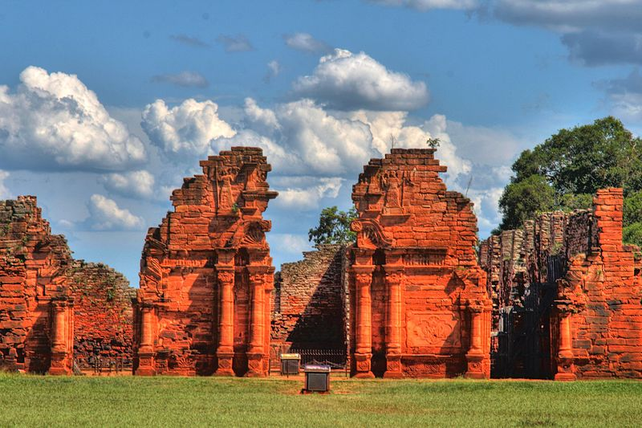

¡Reducciones Jesuíticas!
Un sitio Guaraní Jesuítico restaurado en su totalidad, donde se puede apreciar en su plenitud la Arquitectura,
el Urbanismo y el Arte Barroco-Americano plasmado en los muros del templo, su gran fachada y la residencia de los Padres Jesuitas.

Espectáculo de imagenes y sonido
El espectáculo de imagenes y sonido tiene lugar en San Ignacio en las Reducciones Jesuíticas de San Ignacio Mini
.La duración del mismo es de 45 minutos y está disponible en varios idiomas pensado para grupos de hasta 80 personas por función.